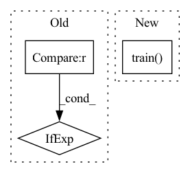

Pattern ID :8933
Before Change
sampler = AsyncSampler(
env,
num_workers=num_workers,
) if num_workers > 0 else None
eval_sampler = AsyncSampler(
env,
num_workers=eval_workers) if eval_workers > 0 else NoneAfter Change
if apex:
assert samples.weights is not None
agent.replay_buffer.store(samples)
agent.train()
agent.train()
assert agent.writer.train_steps > 1
In pattern: SUPERPATTERN
Frequency: 4
Non-data size: 3
Instances Fragment ID: 32746419
Project Name: syuntoku14/pytorch-rl-il
Commit Name: c7d2eeab9c23a0bd00861fcb57803531aa57c691
Time: 2020-05-29
Author: syuntoku14@gmail.com
File Name: rlil/presets/validate_agent.py
M Class Name: AnonimousClass
N Class Name: AnonimousClass
M Method Name: trainer_validation(3)
N Method Name: trainer_validation(4)
M Parent Class:
N Parent Class:
M File Name: rlil/presets/validate_agent.py
N File Name: rlil/presets/validate_agent.py
M Start Line: 44
M End Line: 55
N Start Line: 45
N End Line: 68
Before Change
res = faiss.StandardGpuResources()
capacity, dimension = shape
progress_idx = 1
total_progress = 4 if use_pca is False else 5
// to speed up access to np.memmap
// madvise = ctypes.CDLL("libc.so.6").madviseAfter Change
if use_gpu:
gpu_index.train(keys[random_sample].astype(np.float32))
else:
index.train( keys[random_sample].astype(np.float32))
if verbose:
print(" > [{}/{}] training took {} s".format(progress_idx, total_progress, time.time() - start))
progress_idx += 1 Fragment ID: 32746418
Project Name: njunlp/knn-box
Commit Name: dc1f25e13d4c8ff6edc6a4526df462f9d6903869
Time: 2022-11-22
Author: qianfeng1024@gmail.com
File Name: knnbox/datastore/utils.py
M Class Name: AnonimousClass
N Class Name: AnonimousClass
M Method Name: build_faiss_index(13)
N Method Name: build_faiss_index(12)
M Parent Class:
N Parent Class:
M File Name: knnbox/datastore/utils.py
N File Name: knnbox/datastore/utils.py
M Start Line: 30
M End Line: 113
N Start Line: 20
N End Line: 140
Before Change
test_dataset = MyDataset(images_dir=test_img_dir, masks_dir=test_msk_dir,
classes=SYNPICK_CLASSES)
seg_model = torch.load(path) if model_path is not None else None
for i in range(5):
n = np.random.choice(len(test_dataset))After Change
ground_truth_mask=colorize_semseg(gt_mask, num_classes=dataset.NUM_CLASSES),
predicted_mask=colorize_semseg(pr_mask, num_classes=dataset.NUM_CLASSES)
)
seg_model.train()
else:
save_vis(
out_fp="./vis{}.png".format(str(i)), Fragment ID: 32746417
Project Name: ais-bonn/vp-suite
Commit Name: 36b68bc67b166214b4c2975c8394f80bea8a212a
Time: 2021-07-15
Author: boltres@ais.uni-bonn.de
File Name: visualize.py
M Class Name: AnonimousClass
N Class Name: AnonimousClass
M Method Name: visualize(2)
N Method Name: visualize(2)
M Parent Class:
N Parent Class:
M File Name: visualize.py
N File Name: visualize.py
M Start Line: 16
M End Line: 41
N Start Line: 16
N End Line: 33
Before Change
def change_generator_mode(gen, gen_copy, standing_statistics, standing_step, prior, batch_size, z_dim, num_classes, device, training):
gen_tmp = gen if gen_copy is None else gen_copy
if training:
gen.train()After Change
if training:
gen.train()
if gen_copy is not None:
gen_copy.train()
return gen_copy
return gen
else:
if standing_statistics: Fragment ID: 32746415
Project Name: postech-cvlab/pytorch-studiogan
Commit Name: d23f976753c752166c7f8bde8fdd1907f17ab252
Time: 2020-11-12
Author: first287@naver.com
File Name: src/utils/misc.py
M Class Name: AnonimousClass
N Class Name: AnonimousClass
M Method Name: change_generator_mode(10)
N Method Name: change_generator_mode(10)
M Parent Class:
N Parent Class:
M File Name: src/utils/misc.py
N File Name: src/utils/misc.py
M Start Line: 246
M End Line: 260
N Start Line: 267
N End Line: 289